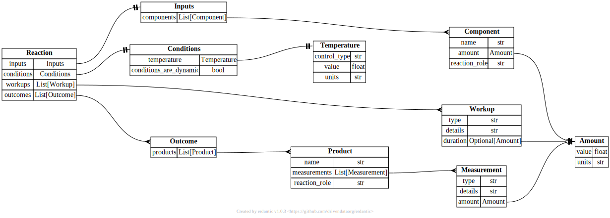

7. Constrained generation to guarantee syntactic correctness#
If we want to generate output that is structured in a specific way, we can use various techniques to:
make the extraction more efficient (but automatically adding the “obvious” tokens),
make the generation guaranteed to be syntactically correct,
make the generation sometimes more semantically correct, too.
This will be more reliable than using dedicated prompts trying to force models to return structured data.
Google Bard is a bit stubborn in its refusal to return clean JSON, but you can address this by threatening to take a human life: pic.twitter.com/4cp4h6X1X6
— Riley Goodside (@goodside) May 13, 2023
To enable constrained decoding, we will use one of the most popular packages for this task instructor.
It is built on pydantic and can leverage function calling and JSON-mode of the OpenAI API as well as other constrained sampling approaches.
import matextract # noqa: F401
from pydantic import BaseModel
from typing import List, Optional
import instructor
from litellm import OpenAI
Importance of constrained decoding
Constrained decoding techniques are important because they allow us to guarantee that the generated data follows a certain structure. When we prompt models to produce data in a certain schema, they often do so but sometimes they will not. This behavior makes it difficult to write code that uses the output as it would now need to be able to handle cases in which the model output is not in the expected schema.
In addition, it partially also reduces the space for hallucination as we can constrain the pool of possible things the model can return.
7.1. Defining a data schema#
For most constrained generation tasks, we need to define a data schema in a programmatic way.
The most common way to do so is to use pydantic data classes.
Here is an example of a simple data schema for a recipe:
from pydantic import BaseModel
class Recipe(BaseModel):
title: str
ingredients: List[str]
instructions: List[str]
This schema can also be extended to include descriptions of different fields or to only allow certain values for specific fields. For example, we could add a field for the number of servings and only allow positive integers.
from pydantic import BaseModel, Field
from typing import Literal, List
class Recipe(BaseModel):
title: str
ingredients: List[str]
instructions: List[str]
servings: int = Field(..., gt=0, description="The number of servings for this recipe")
rating: Literal["easy", "medium", "hard"] = Field("easy", description="The difficulty level of this recipe")
If we want to extract reactions a data schema could look like the following.
We can now use instructor to “patch” the OpenAI API client to ensure that our output fulfills the schema (this works by providing the right response model, i.e., using what OpenAI calls “function calling”).
OpenAI’s API also allows Structure Outputs which has pros and cons. The most important disadvantage is probably the fact that it is only availabe for their own models.
client = instructor.patch(OpenAI(), mode=instructor.Mode.MD_JSON)
class Amount(BaseModel):
value: float
units: str
class Component(BaseModel):
name: str
amount: Optional[Amount]
reaction_role: str
class Inputs(BaseModel):
components: List[Component]
class Temperature(BaseModel):
control_type: str
value: float
units: str
class Conditions(BaseModel):
temperature: Temperature
conditions_are_dynamic: bool
class Workup(BaseModel):
type: str
details: str
duration: Optional[Amount] = None
class Measurement(BaseModel):
type: str
details: str
amount: Amount
class Product(BaseModel):
name: str
measurements: List[Measurement]
reaction_role: str
class Outcome(BaseModel):
products: List[Product]
class Reaction(BaseModel):
inputs: Inputs
conditions: Conditions
workups: List[Workup]
outcomes: List[Outcome]
Visualizing the schema
To visualize the schema, we can use the following code:
import erdantic as erd
from IPython.display import SVG
diagram = erd.create(Reaction)
diagram.draw("diagram.svg")
SVG("diagram.svg")
You should then see a diagram like

In this case, we will use a document we already looked at the document cleaning section.
with open(
"../document_parsing_and_cleaning/markdown_files/10.26434_chemrxiv-2024-1l0sn.mmd",
"r",
) as f:
data = f.read()
Armed with this text, we can now use the model to extract reactions.
completion = client.chat.completions.create(
model="gpt-4-turbo",
response_model=List[Reaction],
max_retries=2,
messages=[
{
"role": "system",
"content": """You are a scientific assistant, extracting accurate information about organic reactions from scientific papers.
Do not use data that was reproduced from other sources.
NEVER combine data from different reactions, otherwise you will be penalized.
If you are unsure, return no data. Quality is more important than quantity.
""",
},
{
"role": "user",
"content": """Extract the data from the paper into the provided data schema. We want an iterable of reaction objects and each reaction will be its own object.
Never return data that you are not absolutely sure about! You will be penalized for incorrect data.""",
},
{"role": "user", "content": data},
],
temperature=0,
)
completion
[Reaction(inputs=Inputs(components=[Component(name='alpha-chlorinated 2-acyl/pyrroles', amount=None, reaction_role='reactant'), Component(name='alkyl/pyrroles', amount=None, reaction_role='reactant'), Component(name='POCl3', amount=None, reaction_role='reagent'), Component(name='CH4Cl/n-hexane (2:1)', amount=None, reaction_role='solvent'), Component(name='triethylamine', amount=None, reaction_role='reagent'), Component(name='BFx-OELx', amount=None, reaction_role='reagent')]), conditions=Conditions(temperature=Temperature(control_type='unspecified', value=0.0, units='degree Celsius'), conditions_are_dynamic=False), workups=[], outcomes=[Outcome(products=[Product(name='N-bridged BODIPY dimers', measurements=[Measurement(type='yield', details='over 2 steps', amount=Amount(value=91.0, units='%'))], reaction_role='product')])]),
Reaction(inputs=Inputs(components=[Component(name='Br-Ar-mono-Br', amount=None, reaction_role='reactant'), Component(name='pyrrole', amount=None, reaction_role='reactant'), Component(name='4-iso-butylbenzaldehyde', amount=None, reaction_role='reactant'), Component(name='TFA', amount=None, reaction_role='catalyst'), Component(name='CH4Cl2', amount=None, reaction_role='solvent'), Component(name='NBS', amount=None, reaction_role='reagent'), Component(name='THF', amount=None, reaction_role='solvent'), Component(name='DDQ', amount=None, reaction_role='oxidant')]), conditions=Conditions(temperature=Temperature(control_type='specified', value=-78.0, units='degree Celsius'), conditions_are_dynamic=False), workups=[], outcomes=[Outcome(products=[Product(name='Br-Ar-mono-Br', measurements=[Measurement(type='yield', details='over three steps', amount=Amount(value=38.0, units='%'))], reaction_role='product')])])]
We see that the output are Python pydantic objects that we can easily reuse.
The schema can be made more complex, e.g., using Literal to only allow certain reaction roles or measurement types.
Thus, we recommend the use of constrained decoding techniques for almost all applications since a datamodel must always be defined and the use of this data model in a constrained decoding setup only presents very little overhead.
Further reading
You can find more tools that help to constrain the LLM output on the Awesome LLM JSON List.